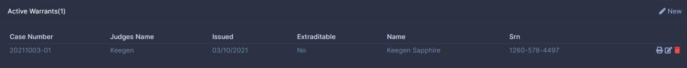
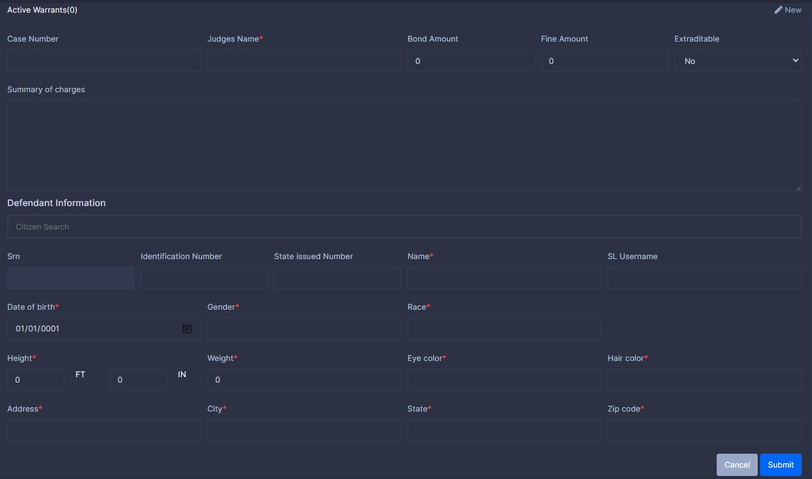
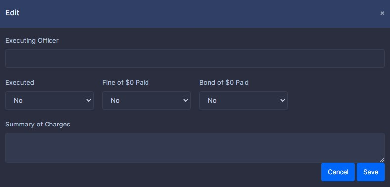

Warrants

Introduction
Introduce in Version 2. Warrants give towns ability to issue a warrant for someones arrest across all towns if selected. Version 4 does not change this area much. However, it does change the way case numbers are generated we now use the YYYYMMDD-## format for case numbers. Case numbers are in UTC time. The number part of the case number will reset to 01 at the end of each day. Warrants now show only active cases old warrants can be looked at under the soon to come criminal records.
Creating a record.
Click the new icon at the right of the screen. Use the citizen search to pre-fill data or type it in yourself. Input any information required and click submit.

Editing a record.
If you have the ability click the edit icon. You can not change the original content of the warrant however you can state the executing officer, executed, fine paid, and/or bound paid.

Deleting a record.
If you have the ability click the trash icon to delete.
Print Warrant
N/A At this time. This feature is being improved to accept a custom template.